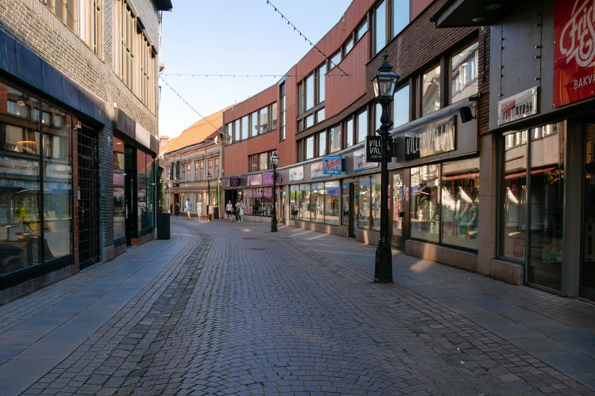

Jönköping
There are a lot of things that we can do in Jönköping eventhough it is not a big city.
I often go to city center to go shopping and go to cinema with friends.
There are many restaurants that we can go to, but I often go to Basilika.

Buying snacks in Go Banana, they are really cheap there.
*And go out of the city for traveling, maybe Gränna. :)))